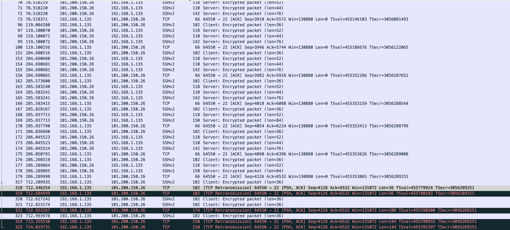
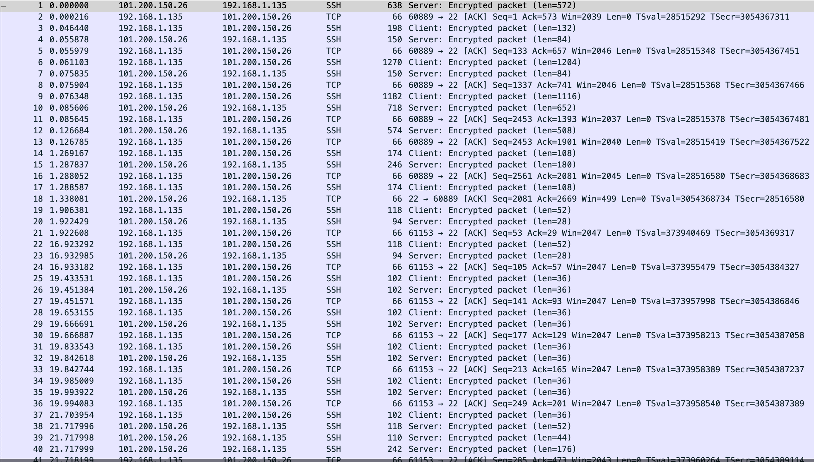

ssh 使用
server
禁用密码登录
/etc/ssh/sshd_config
UsePAM no
PasswordAuthentication no
/etc/ssh/sshd_config.d/50-cloud-init.conf
# 示例，禁用密码登录要改成 no，cloudcone 使用 cloud-init 添加文件启用了密码登录
PasswordAuthentication yes
有些服务商会不修改 sshd_config 文件，而是在 sshd_config.d 目录下添加新文件进行覆盖。
如果改了 sshd_config 文件重启发现没有生效，要检查 sshd_config.d 目录
client
~/.ssh/config
# 通过跳板机做转发
Host beszel
Hostname localhost
User root
ProxyJump orange723
LocalForward 8090 localhost:8090
Host *
IdentityAgent agent.sock
UserKnownHostsFile /dev/null
StrictHostKeyChecking no
ServerAliveInterval 15
正常连接 server 后长时间不操作，就会卡住然后只能重新连接，根据 plantegg 看到
"ServerAliveInterval [seconds]" configuration in the SSH configuration so that your ssh client sends a "dummy packet" on a regular interval so that the router thinks that the connection is active even if it's particularly quiet
client 会每隔多少s 发送一个 packet 到 server
抓包看看
no-time

会发现连接后，长时间不操作 client 再去连接 server 已经连不上了，重新传输 server 都无响应，跟我们碰到的情况一样，只能重新连接
time

设置的 15s 可以看到连接后，在 16.923s 是 ssh 协议 client 发送一个包到 server，server 也响应了
ssh-local-forward
ssh -f -N -L 8090:localhost:8090 orange723